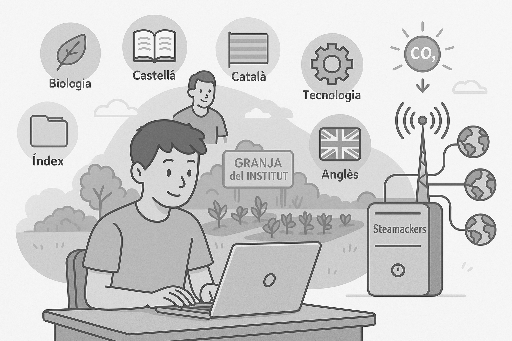

Avui he acabat de programar l'essencial per a la meva pàgina web. He col·locat Biologia, Castellà, Català, Tecnologia, Índex i Anglès, i he posat tot el que tenia endarrerit. També he afegit la imatge per a Biologia, que representa el baix consum de diòxid de carboni i energètic. Ahir en Jordi em va ensenyar tot el necessari per començar el lloc web. Més endavant, crearé una granja, és a dir, farem servir l’hort de l’institut, i si ens queda temps, podrem crear un servidor amb el Steamackers, que estarà connectat al Wi-Fi de l’institut. I si puc triar, jo connectaré totes les IA que pugui per rebre respostes des de qualsevol lloc del món. Per què? Doncs no ho sé.
Avui he provat el sensor de temperatura que està al costat del d’humitat, és a dir, són el mateix en un. Després he usat el mesurador d’humitat de terra, que no funcionava, donava zero tota l’estona. També el detector de llum. El sensor d’humitat l’utilitzarem per veure si les plantes necessiten aigua, per activar la bomba d’aigua per regar-les, lògicament, no? Segurament provaré altres sensors d’humitat i acabarem de provar-ho tot, i provarem els transmissors LoRa que ens enviaran informació cada 1 o 3 minuts segons la llei espanyola.
Avui hem intentat programar el LoRa amb les plaques, però ha estat un caos perquè no sabem com fer-ho. Demà sabrem almenys com transferir les dades de l’hort a la placa base, que es configurarà automàticament a partir d’un JSON per automatitzar-ho tot. Col·locarem una bateria externa i, si podem, plaques solars, perquè el LoRa només pot enviar informació cada 2 a 5 minuts segons la llei espanyola. Honestament, em fa mandra escriure tot el que faig cada dia perquè tinc molta son.
Avui hem connectat el sistema LoRa amb la placa base i finalment hem començat a rebre dades des de l’hort, cosa que ha estat bastant emocionant perquè fins ara només havíem provat coses per separat. Hem encès el sistema i hem vist que començava a enviar informació automàticament, com havíem planejat. Hem provat diversos sensors; alguns funcionaven bé i altres no responien del tot, així que hem anat desconnectant i canviant fins quedar-nos amb els que sí que donaven lectures coherents. També hem instal·lat la bateria externa perquè el sistema pugui estar encès sense dependre de l’ordinador. Durant les proves hem vist que el LoRa enviava les dades amb un petit retard, però dins del que s’esperava segons la normativa. L’hem deixat funcionant una bona estona per assegurar-nos que tot es mantenia estable. Encara ens queda ajustar alguns detalls i provar com es comporta durant més temps, però de moment estem contents perquè tot comença a funcionar com hauria de. A poc a poc es va veient com pren forma el projecte.
Avui hem fet un pas fonamental en el desenvolupament del projecte en començar a treballar amb Apps Script per gestionar tota la informació que ens envia el sistema LoRa. La idea és automatitzar el processament de les dades per evitar haver-ho de fer manualment i així estalviar temps i errors. Primer, hem configurat un script que rep les dades transmeses per LoRa i les organitza automàticament en un full de càlcul de Google Sheets. Això ens permet tenir tota la informació centralitzada i ben ordenada per poder consultar-la fàcilment en qualsevol moment. Després de tenir el full de càlcul funcionant, ens hem centrat en crear una connexió entre aquest full i la nostra pàgina web. Així podem mostrar les dades en temps real de manera visual i accessible, sense necessitat d’accedir directament al full. Aquesta integració ens ajudarà molt per monitorar l’estat de l’hort des de qualsevol dispositiu amb connexió a internet. Encara queden moltes coses per millorar i detalls per polir, però avui hem aconseguit connectar les tres parts principals del sistema: la captura de dades amb LoRa, l’emmagatzematge i processament amb Apps Script i Google Sheets, i la presentació al web. Sens dubte, un dia molt productiu que ens acosta cada vegada més a tenir un sistema completament automatitzat i funcional.
Avui hem ajustat detalls al full de càlcul i la connexió amb la web. Hem millorat la presentació de les dades perquè sigui més clara i visual. També hem corregit errors en els noms dels sensors. Seguim provant que tot funcioni bé durant més temps. Hem fet proves de desconnexió per veure si el sistema es recupera sol. Ha funcionat força bé, tot i que encara es pot millorar.
Ens hem centrat en el disseny de la web perquè les dades de l’hort es vegin més agradables. Hem canviat colors, tipografies i hem organitzat millor les seccions. També hem afegit gràfics per veure la humitat i la temperatura amb més claredat. Ens ha ajudat molt tenir les dades ben ordenades a Sheets. Seguirem millorant l’aspecte visual. Tot plegat fa que el projecte sembli més professional.
Avui hem instal·lat un segon sensor d'humitat per comparar resultats. L'hem col·locat en una altra zona de l’hort per veure si hi havia diferències. Ha funcionat bé i ha mostrat que algunes parts necessiten més aigua que altres. També hem revisat el consum d’energia de tot el sistema. Sembla que amb la bateria dura força, però els panells solars ajudaran molt més. Demà volem provar la bomba d’aigua.
Hem provat la bomba d’aigua connectada al sensor d’humitat. Hem aconseguit que s’activi sola quan baixa d’un cert nivell. Ha estat un moment clau perquè ja tenim el sistema gairebé complet. També hem fet una prova amb diferents horaris d’enviament de dades. Hem decidit que cada 3 minuts és suficient i compleix la llei. Tot comença a estar automatitzat i estable. Estem orgullosos del progrés.
Avui hem fet una revisió general del sistema. Hem verificat els sensors, la connexió LoRa, la bateria, la web i tot funcionava correctament. També hem redactat un petit manual d’ús per a futures persones que el facin servir. Ens queda poc per fer, només petits ajustos. El sistema ja pot funcionar de manera autònoma. Veure el resultat final dona molta satisfacció. Ja estem pensant en nous projectes per continuar aprenent.
